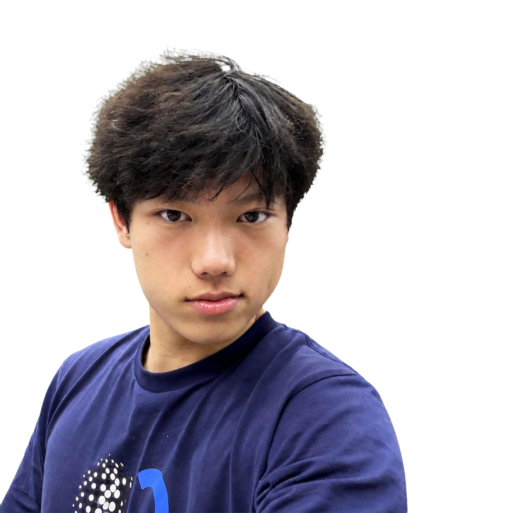
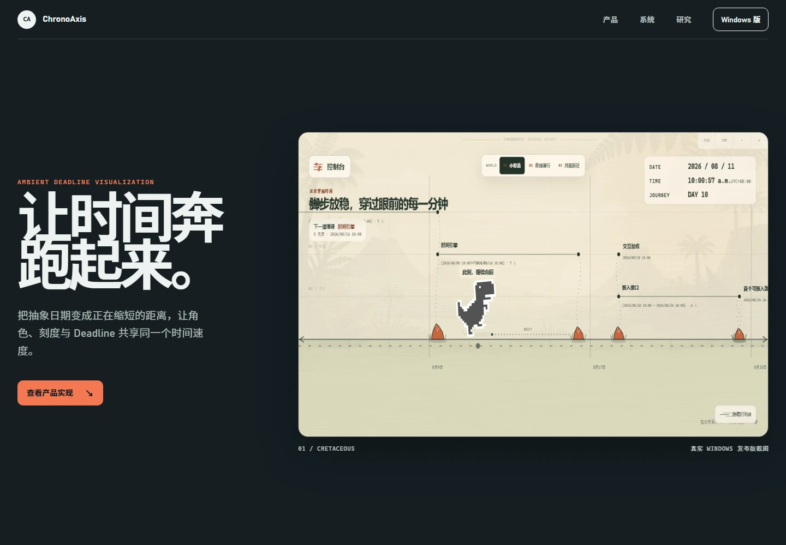
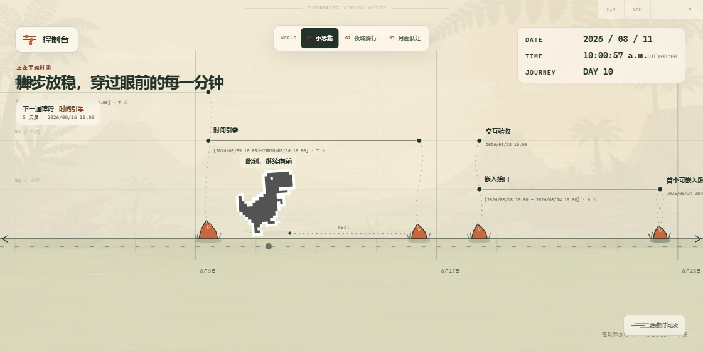
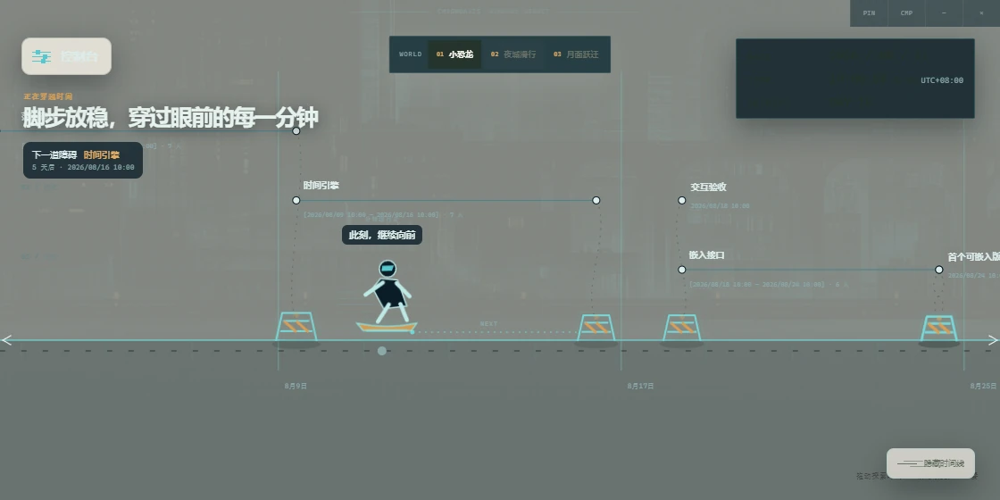
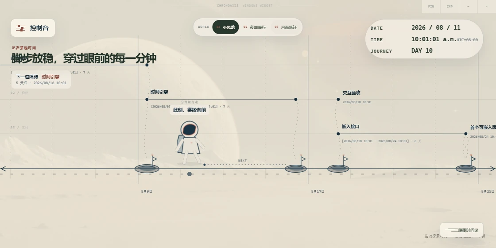
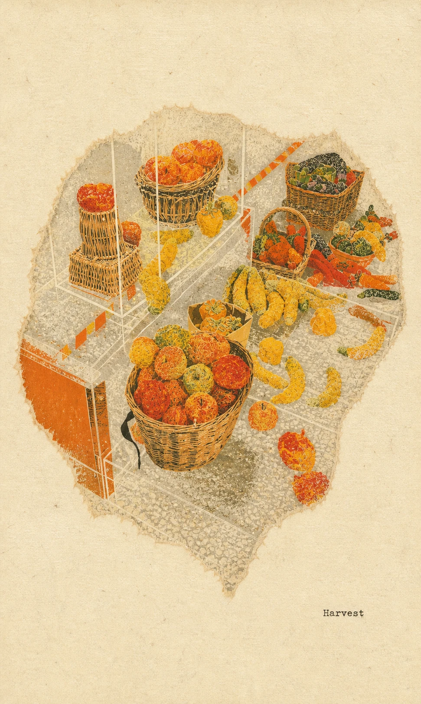
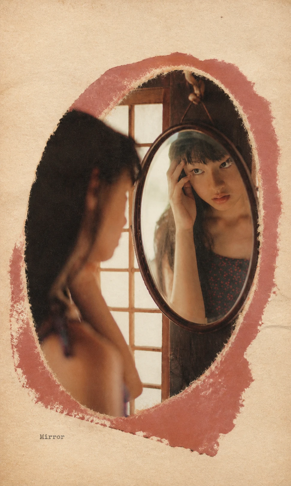
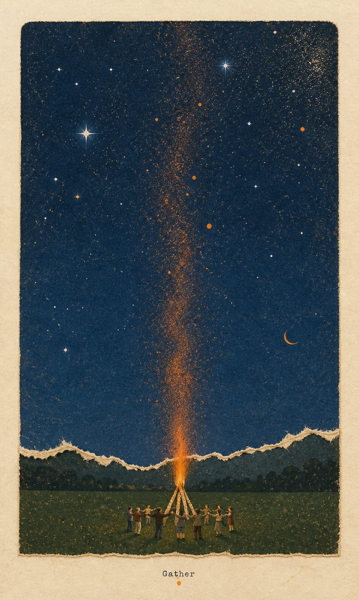
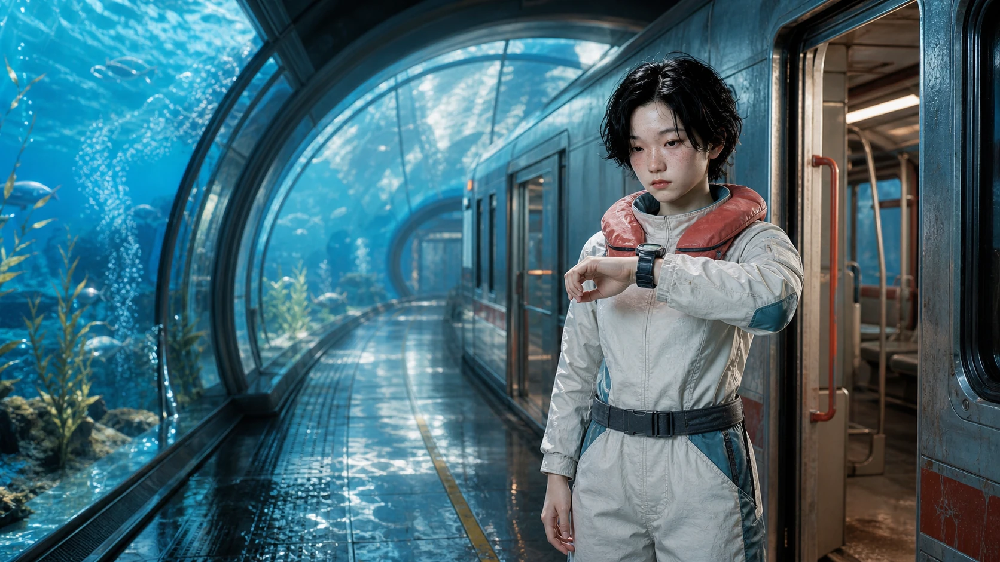

先判断，再生成。
我关注的不是生成速度，而是每一步为何成立，以及它如何进入真实使用场景。
- Education
- 湖北美术学院 / 视觉传达设计 / 准大二
- Phone
- 15871040586
- talonxus@outlook.com
-
定义问题
先确认受众、目标与信息层级，建立可以判断方向优劣的标准。
-
建立方向
围绕构图、材质与叙事发散多个分支，用比较而不是直觉完成筛选。
-
精修系统
统一网格、字体、边缘与色彩，让单张结果变成可延展的视觉系统。
-
验证交付
把设计放进响应式页面与交互原型，以运行结果检查体验是否成立。
ChronoAxis
一个把 Deadline 的抽象距离，转成可持续感知的桌面时间轴。

从市场调查到产品验证
-
研究问题
Deadline 分散在日历、任务管理器和聊天工具中。提醒解决了“别忘记”，却没有回答“现在距离关键节点还有多远”。
-
竞品样本
比较 Structured、Todoist、Notion Timeline、Microsoft Planner、Motion、Sunsama 与 Aeon Timeline，记录时间可视化、交互负担、持续可见性和跨尺度能力。
-
机会定义
市场空位不在更多功能，而在更低打扰的时间感知：把当前时刻、起止区间与剩余距离变成桌面上的环境信息。
-
产品边界
不做完整任务管理器，也不替用户排程。只保留精确起止、跨尺度投影、低交互常驻与可切换的运动叙事。
-
原型实现
用统一映射把毫秒转成屏幕位移，再将状态、配置与本地数据组织成可以运行和迭代的产品原型。
-
验证计划
下一轮关注首次建立完成率、最近节点识别速度、留存与运动焦虑；验证目标是用户能在 5 秒内读懂距离，并可随时切换静默模式。



Gathered
Scenes
从照片中的人物关系与场景温度出发，把三个片段组织成同一套拼贴叙事系统。



Between
Stops
以同一人物和列车为锚点，把海岸、云端与海底连接成连续的超现实通勤叙事。

TapNow 画布保留了概念分支、角色锚点与筛选路径；作品集中只呈现对最终判断有效的部分。
查看创作画布这份简历，值得继续聊吗？
打勾或打叉都可以。点击后留下具体建议，帮助我继续调整作品重点与表达方式。